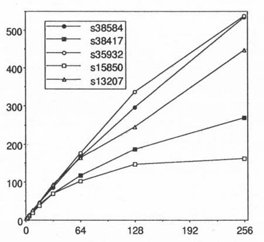
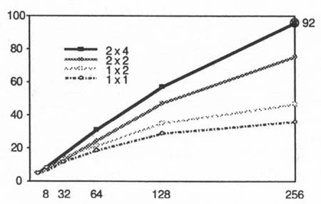
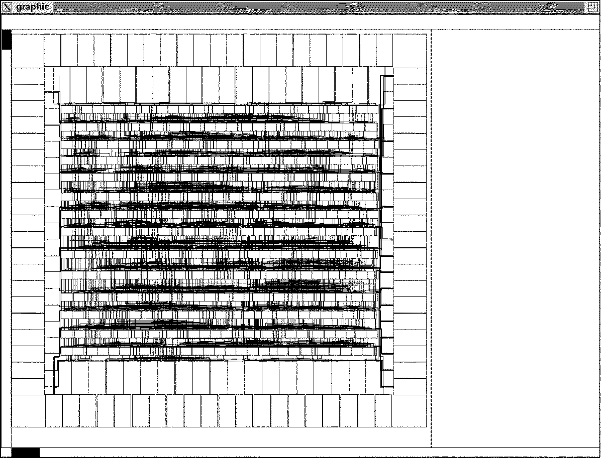

Next: 自然言語処理システム
Up: 無題
Previous: 遺伝子情報処理システム
LSI-CADの工程中、論理シミュレーション、LSIセル配置、およびLSI配線の工
程を並列化し、高速化および高品質化を達成した。

論理シミュレータの台数効果
(縦軸: Kイベント／秒; 横軸: プロセサ数)

LSI配線の台数効果
(縦軸: 台数効果; 横軸: プロセサ数)

LSI配置・配線の結果表示
論理シミュレーション、LSI配線は数日〜数か月という多大な処理時間を必要
とする工程であり高速化が強く望まれている。また、LSIセル配置では、人手
による微妙なパラメータ設定が必要であり、適切な結果を得られない場合が存
在する。これらの問題点を解決するために、このシステムでは下記の技術を開
発、導入している。
- 論理シミュレーション
-
見込み計算 (無駄になるかも知れない計算) を積極的に行う機構を導入すること
で、多大な並列性抽出に成功。また、プロセサ間通信を低減しつつ、負荷の
均等化を達成する回路分割アルゴリズムを提案。166倍の並列処理効果(256プ
ロセサ使用時)、数百MIPSのスーパコン上のシステム相当の性能を達成。
- LSIセル配置
-
適切なセル配置を求めるためにシミュレーティド・アニーリング法(金属の焼
き鈍し工程を摸擬する方法)を採用し、これにパラメータ設定を自動化する並
列アルゴリズムを導入。これによって、極めて最適に近い配置を得る能力を実現。
既存のシステムによる結果と比較し、最小のチップ面積を達成。
- LSI配線
-
オブジェクト指向のモデル化技法を導入することによって、多大な並列性抽出
に成功。また、並列に配線経路探索を行いつつ、指定された配線順序を守るこ
とで、配線品質を向上させる機構を提案。92倍の台数効果(256プロセサ使用
時)、数百MIPSスーパコン上のシステム相当の性能を達成。また、100%の配線
率を達成。